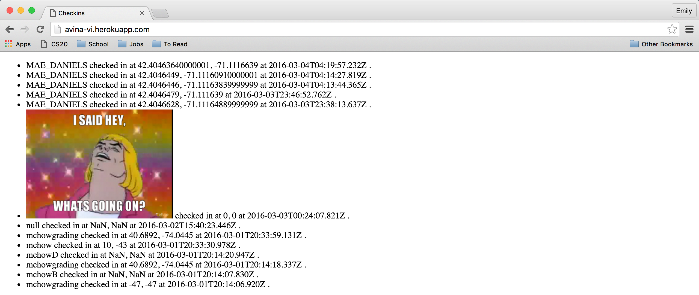
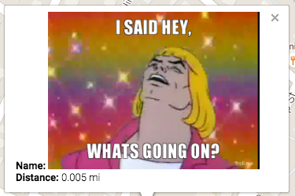
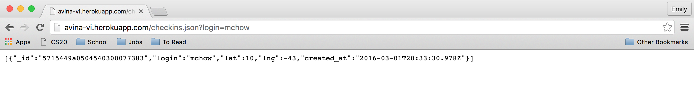
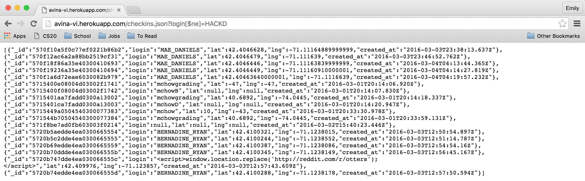

By: Emily Naito - 4/26/2016
I was tasked to do a security assessment of the Jacob's Landmarks project for Comp20 assignment 2 and 3. For these assignments, he was supposed to develop a server-side web application to manage databases, keeping track of people's check-in locations and the location of different historical landmarks. This server paired with the previous assignment, which used XMLHTTPRequest and the Google Maps API to display these nearby locations on a map with interactive clicking.
I was hired to analyze Jacob's assignments and find potential security or privacy vulnerabilities. The methodology I used, as well as the results of my analysis, can be found below. Overall, there were many shortcomings within his code, which was not surprising, given that the assignments said to not focus on security issues. However, in future, there is much to be improved upon to secure such a web application.
I completed two rounds of security analysis. I began with "black-box" testing, in which I ran the code normally and tried to infiltrate the web application without looking at the source code. I then read through the source code and found other potential issues, which I continued to exploit. In addition to these tests by hand, I also utilized Tamper Data for Firefox to test different possible exploitations for HTTP POST, along with curl.
From my testing, I found multiple different security and privacy issues. The largest problem is a reliance on user-input. If users provided information unlike what the server expected, there were many potential problems. In some cases, the server would utilize the bad output, meaning the map would be unable to process the information, resulting in errors and incorrect displaying. In other cases, bad user input could crash the server entirely, rendering the entire web application unusable until the information was removed. This is an extremely problematic security issue, as the database could be taken down with one line of code, easily accessible to the public. Additionally, there are privacy concerns, as the entirety of the database can be accessed in a usable format—rather than the readable format of the homepage—even though the application should only allow for specific searches.
Severity: Medium. With HTML Injection, users can control content of the page without regulation. The owner is no longer able to determine the content of the page, which can entirely change the message or intent of any web application. It also is problematic for other sites that rely on the server, as they, too, will be expecting regular data. However, this is relatively easy to correct, and cleaning the database is relatively simple, though annoying or painstaking.
Location: In the HTTP POST/sendLocation, entering HTML for the login, lat, or lng values result in the execution of the HTML, rather than the text or number data expected.
Issue: When I used curl to test the error checking and user input escaping, I recognized that HTML was allowed, such as in the values of the key-value pairs. For example, running curl --data "login=<img src='http://i.imgur.com/vwi402f.png' height=200></img>&lat=0&lng=0" http://avina-vi.herokuapp.com/sendLocation resulted in the following display on the index page:

While this image is relatively harmless, the ability to insert HTML into the database both affects this HTTP GET for the Checkins homepage, as well as any clients that would use this database, like with A2, which now displays this in the info window:

Resolution: The code should escape the user input before it is added to the database, as to avoid problematic characters. One method of doing this is with string.match, which allows potentially dangerous characters (such as <) to be removed from the string as a way to avoid bad data.
Note: In Jacob's assignment, the homepage does not properly display the checkins, as they are not arranged in order starting from most recent. However, this could be easily remedied by using Date(), rather than his method, which includes new Date() with a complicated series of getting current data and padding, which resulted in unordered items (or rather, items sorted, but not with correct information).
Severity: High.Redirecting the page not only renders the homepage of Jacob's Heroku entirely useless—unless you want to look at otters—it also could entirely change the message of the site or redirect to a harmful download. Also, the potential of cross-site scripting is endless. Not only could the script be used for redirects, but also for much more questionable means, like accessing private information.
Location: In the HTTP POST/sendLocation, the login, lat, and lng values are not checked for scripts, so they will be executed when displayed on the homepage, or other potential uses of the database.test
Issue: I was using curl to test the potential of cross-site scripting, as I know the assignment required the use of cross-origin resource sharing. For example, when I ran curl --data "login=<script>window.location.replace('http://reddit.com/r/otters');</script>&lat=0&lng=0" http://avina-vi.herokuapp.com/sendLocation, accessing his Heroku homepage now automatically redirected to a Reddit thread about otters, as shown below.
Resolution:Similar to the HTML Injection, the values for login, lat, and lng should be escaped before added to the database. By converting all of the potentially problematic characters to their escaped values (eg. using < instead of <), this prevents the scripts from executing, either when trying to display on the homescreen or other uses of the database. This can be achieved with a string.match to identify only numerical digits, alphabet characters, white space, and certain special characters (eg. !, #, $) not related to scripting, and string.join to remove the rest.
Severity: Low.This is a privacy concern, as this allows access to the JSON of all of the elements, which is not allowed for the spec. While this is not a huge security breach, as this information is publicly available on the homepage, allowing the information as a JSON means that the data can easily be used without stripping the website, so it can be negatively utilized.
Location: In the HTTP GET/checkins.json, when providing invalid login information to result in displaying all of the JSON checkins, rather than just the ones that meet the search query.
Issue: I discovered this potential privacy breach by entering invalid login information as the query string for the checkins.json request. Instead of entering the URL as http://avina-vi.herokuapp.com/checkins.json?login=mchow as a way to access all of Ming's checkins (shown on the top, as the appropriate result), I entered http://avina-vi.herokuapp.com/checkins.json?login[$ne]=HACKD, which led to the result on the bottom. By using the [$ne], I was able to access all of the JSON entries that were not equal to "HACKD" which, in this case, was the entire database. With this information, someone would be able to repurpose all of the database information, without even needing to do a HTTP POST/.


Resolution:To fix this problem with the /checkins.json, we can insert another cleaning of the user input, this time on the request.query.login, so as to ensure that there are not any overrides to the equals sign. This can similarly be done with a string.match() and string.join(), or another method to filter out potentially problematic characters, such as anything within [].
Jacob included his MongoDB username and password as a way to reference his MongoURI. However, this is a major security risk, as this information can grant owner access to all database information. While this was not relevant during this security evaluation, as I already had collaborator access to the assignment, this poses a major risk to others who could access his code through non-approved means.
There are many potential issues within the Server-Side assignment which render security or privacy concerns. However, many of these issues are easily rectified through simple checking of user input, as most of the code currently assumes that the user input is correct and helpful. In future, it would be beneficial to have this sort of error checking. In addition, to secure it further, there may be benefit to limiting the additions to the checkins database to only be from legitimate sources, such as the A2, rather than any cross-origin site. However, this would requite a restructure of both the server and frontend code, which would be comparatively much more expensive, though more thorough in avoiding potential hacking. It also depends on the real goal of the server, and if there are other use cases besides the A2 map.